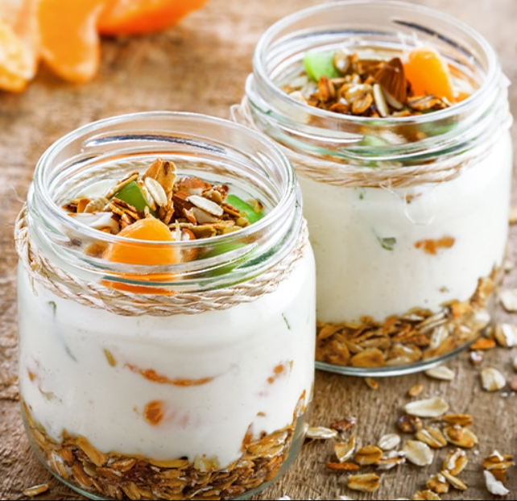

Volver a la pagina principal
Yogurt Miel y Frutas

Ingredientes
- 2 tazas yogurt
- 2 cucharadas miel
- ½ cucharada extracto de vainilla
- 2 pizcas canela
- 1 Kiwi cortado en trozos
- 1 China mandarina pelada y separada
- 1 Manzana cortadita en trozos
- Granola a gusto
Paso a paso
- En un envase, mezcla el yogurt con la miel, el extracto de vainilla, la canela, y guarda en la nevera por 15 minutos para que se mantenga frío.
- En pequeños recipientes servir un poco de granola, yogurt y de frutas.
- Como paso final puede decorar con un poco más de granola y a disfrutar.
Resultado final